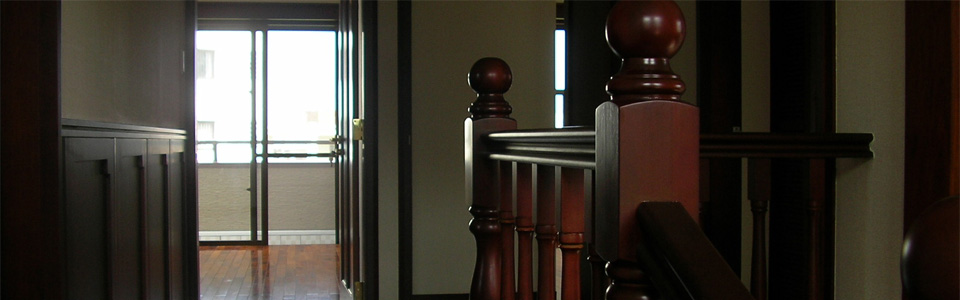
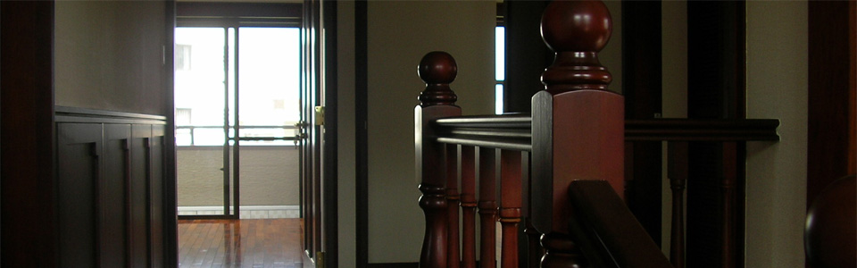
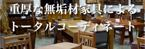
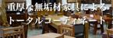
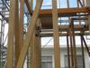
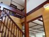
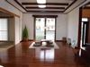
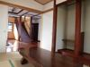
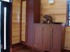
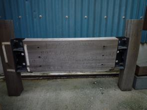

IGハウスについて
沖縄の風土気候に適合した木の家ならお任せ下さい。構造体はラオス、内装・造作と家具はインドネシアの自社工場で製作した天然木仕様です。
IGハウスは、沖縄イゲトー・ゼニスプラザの商材、ノウハウ、ネットワークをフルに活かしてワンストップサービスをご提供する、沖縄発オリジナル一戸建て木造住宅のブランドです。
防虫・防蟻性に優れた、シロアリに強い樹齢200年以上の構造体を使用した安心の木の家
構造体の耐震・耐久性は杉材の何と2.5倍以上
木造住宅の常識を覆すクレテック金物工法により堅牢な作りを実現
木造住宅とコンクリート住宅の違い
実は、木は、鉄よりも強いと言われています。
建築材料の強さを比重で割った“比強度”と呼ばれるデータによると、スギの引っ張り強度は鉄の4倍。コンクリートに関しては197倍という結果が出ています。また、圧縮強度はコンクリートの６倍優れています。
地震のエネルギーは重さに比例し、家が軽ければ軽いほど受けるダメージは軽減されます。同じ体積のコンクリートと木材を比較すると、コンクリートの方が4～5倍重いので、軽くて強い木の家は大きなメリットがあるのです。
木造住宅の耐震性
阪神・淡路大震災の際、多くの家屋が倒壊し、鉄筋コンクリート造の建物も崩れ、高速道路の橋脚までもが折れました。そして、多くの木造住宅が倒れた事により「木造は弱い」という報道・情報が散乱してしまいました。
しかし、倒れた家屋のほとんどが、現在の建築基準法施行前の古い家“在来木造住宅”で、現在の建築基準法施行後に建てた“家在来木造住宅”は、全壊せずにほとんど残っていたのです。
家在来木造住宅の振動実験をした結果、どれも倒壊したものはなく外壁に多少ヒビが入った程度という報告がされています。現在の建築基準法を守り、きちんとした施工をすれば地震から家屋を守れるのです。
 

木造住宅と火災
木造住宅といえば“燃えやすい”というイメージから火災を心配するのは当然の事です。しかし、断面の大きな木材は燃え始めると表層に炭化層ができ、酸素の供給が抑制され内部は燃焼しにくい状態となります。内部へ火がまわる炭化速度は１分間に0.6~0.8ミリ程度。木材は１５分経過しても約６０％の強度を保つことができます。
それに比べると鉄、アルミニウムは５～６分熱が加わるとほとんど強度がなくなり簡単に曲がってしまいます。火災が発生した場合、簡単に曲がる恐れのある鉄骨造よりも断面が大きな柱や梁でできている木造住宅の方が、長時間建物が維持され、一気に倒壊する心配がありません。
シックハウスについて
当社では、床材をはじめ室内家具等もすべて天然木で造作しているので、ホルムアルデヒドといった接着剤の影響はありません。
小学校・幼稚園にも数多く商品提供した実績もあり、自信を持ってお勧めする商品ばかりです。
施工事例
{kind=link}
構造体の相互接合部の拡大写真です。
プレカット加工した部材を金具で組み合わせます。

{kind=link}
軸組み工法によって作られた構造体。
独自の工法によって、大幅な工期の短縮も実現しました。

{kind=link}
このお宅の目玉となるのは、1階から2階の天井まで続くカリン材の大黒柱。
ラオス工場での加工品です。

{kind=link}
間仕切りのない広々リビング・ダイニングルーム。
天井造作･カーテンボックス：ニヤトー、フローリング：マーカー、テーブル：チーク材

{kind=link}
リビングから奥に広がる和室
テーブル：チーク材、座卓：クス

{kind=link}
玄関靴箱。
オーダーメイド靴箱：ニヤトー、上り框：カリン
FAQ
Q:固く頑丈な木の構造体の場合、特殊な基礎が必要になりますか？
A:建築基準法に基づいた基礎であれば、問題はありません。
Q:柱が重いとの事ですが、建築現場にクレーン等の特殊な機器や設備が必要ですか？
A:柱や梁に用いる15cm角の建材でも、長さが3m未満であれば人力で容易に持ち上げたり組み上げることは可能です。
Q:どの様な防虫対策がなされていますか？
A:構造体に使用しているマイシー材はそもそも非常に固いため、それだけでもシロアリを寄せ付けませんが、念には念を入れて防虫塗料を塗布してあります。
Q:IGハウスの施工には特殊な技能が必要ですか？
A:いいえ、必要ありません。
Q:RC住宅よりも湿気に弱いという事はありませんか？
A:私達はむしろ「呼吸」をする木造住宅の方が、湿気には強いと考えています。
Q:家具を含めたトータルコーディネートが可能ですか？
A:それこそが私達が最も得意とするところです。インテリアに加え、オーダーメイドキッチン、太陽光発電パネル、そしてガーデン家具等、施主の方にも十分満足して頂けるワンストップサービスが自慢です。
軸組み工法とは？
沖縄の気候風土を考えて、私達が構造体様用の材木として選んだセランガンバツ材（現在は伐採禁止）やマイシー。一般的に使われる事の多い杉材と比較できない程に非常に固く、シロアリ等の害虫も寄せ付けません。海外では海上構造物の柱として使われたり、また日本では線路の枕木にも使われていると言えば、その耐久性と強度も納得して頂けるかもしれません。
あまりの固さゆえに大工泣かせでもあるこの鉄木を、当社は海外の自社工場で設計図面に基づいてプレカット加工したうえで輸入するため、現場では金具を使って組み立てるだけのシンプルな工法が実現できています。
今日の、温暖化による環境の変化には深刻なものがあります。県内のみならず、本土各県からのご要望にも喜んで対応させて頂きます。
軸組み工法の強度
セランガンバツ材と杉材の比較
- 材質
- セランガンバツ
- 杉
- 比重
- 1.15
- 0.38
- 生材重量(Kg/m3)
- 1200-1300
- 600-700
- 平均収縮率(板目方向)
- 3.5〜3.9
- 5.2
- 平均収縮率(柾目方向)
- 1.7〜2.1
- 2.1
- 弾性係数(N/mm2)
- 20100
- 75000
- 圧縮強さ(N/mm2)
- 73
- 35
- 曲げ強さ(N/mm2)
- 142
- 65
- 分類
- 熱帯広葉樹
- 針葉樹
- 用途
- 構造・デッキ・橋・フローリングなど
- 構造・家具・ベニヤ・ジョイナリーなど
数値は当社の依頼により沖縄工業技術センターで計測した結果に基づくものです。

{kind=link}
写真は沖縄工業技術センターでの計測に用いた実際のサンプルです。約23.9t（234.2KN）の荷重でひびが入り始めたことが判ります。
ちなみにこのサンプルは計測の実施後、約10年間野ざらしに放置していますが、経年劣化は殆ど見受けられず、害虫による被害もありません。